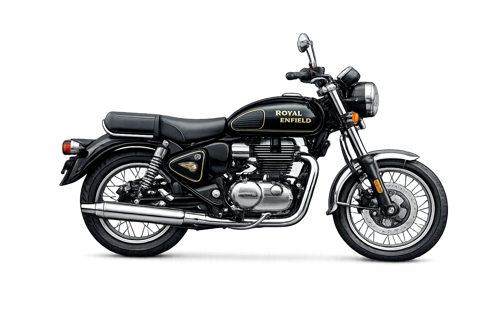
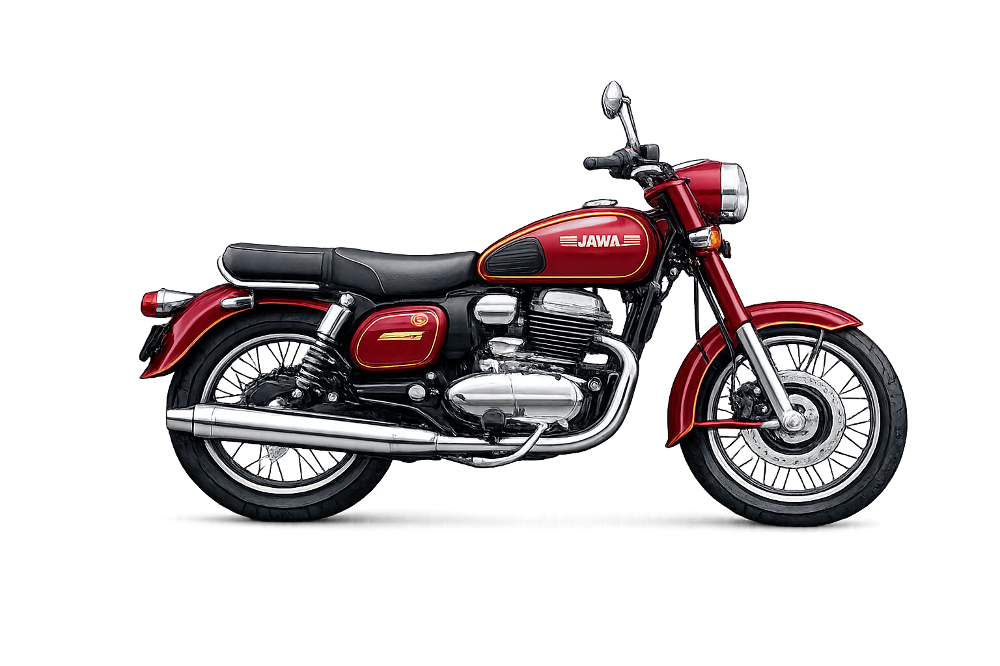

Cruiser Bikes
Made for relaxed long rides with commanding road presence.
Who Should Buy
Riders focused on comfort, style, and highway cruising at steady speeds.
Strengths
Comfortable seating, torquey engines, and classic character.
CB 350

The Honda CB350 is a modern retro motorcycle that combines classic styling with reliable performance. Powered by a smooth 350cc engine, it offers strong torque, comfortable riding, and excellent stability for both city roads and long highway rides. With its vintage design, premium build quality, and advanced features like dual-channel ABS and LED lighting, the CB350 is a great choice for riders who enjoy a classic look with modern technology.
Bullet

The Royal Enfield Bullet is one of the most iconic motorcycles known for its classic design and strong road presence. Powered by a powerful 350cc engine, it delivers a smooth and torquey ride that is perfect for both city cruising and long highway journeys. With its vintage styling, solid metal build, and signature thumping sound, the Bullet remains a favorite among riders who appreciate tradition, durability, and timeless style.
Jawa

The *Jawa 350* is a retro-style motorcycle that blends classic design with modern engineering. Powered by a 350cc engine, it delivers smooth performance and a strong mid-range power that makes it suitable for both city rides and long journeys. With its vintage look, chrome detailing, and comfortable riding posture, the Jawa 350 appeals to riders who appreciate classic motorcycles with reliable modern performance.